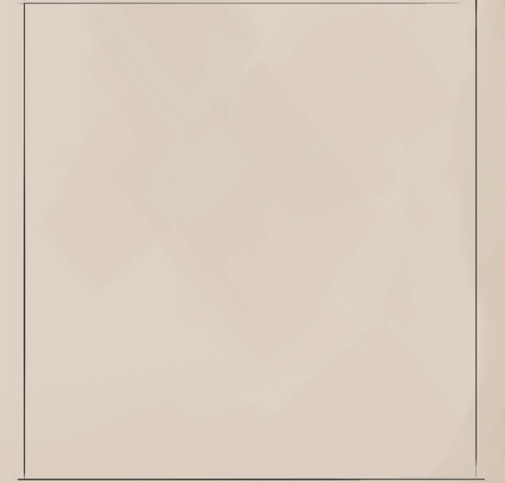

Skills are predetermined actions that the character may do, although which require a certain amount of expertise. Unlike actions, there is a chance that the character's ability to perform these skills isn't good enough and that the character fails their attempt.
Skills function exactly as actions, with a certain amount of time allocated per skill. The difference lies in the chance of failure. Unlike an action which is simply declared, a skill must also be rolled. The roll is then checked against the difficuly check and the outcome decided.
As with all dice rolls, to know if a skill was succesful, it must be rolled against a difficulty check. These are preset numbers that the skill value of the roll is used against. (See Dice Rolls)
Should a skill benefit from multiple ability scores, the character chooses only one. These bonuses do not stack, and only the chosen ability score is used for the skill roll.
Natural skills are ones that relies more upon the character's natural inborn abilities. These skills aren't as heavily penalized for being untrained but don't get as much from mastery.
NATURAL SKILL VALUE Relevant Ability Score + Mastery Bonus - 2
Learned skills can also be attempted by any character (as long as they aren't complex), although without learning the intricacies the characterwill have a much tougher task ahead. Learned skills have a much heavier penalty untrained and relies upon mastery.
LEARNED SKILL VALUE Relevant Ability Score + Mastery Bonus - 5
TRADE SKILL VALUE Relevant Ability Score + Mastery Bonus - 3
While knowledge skills are much like learned skills for their penalty and mastery, they also further penalties depending on the character's upbringing, backstory and other knowledges.
KNOWLEDGE SKILL VALUE Relevant Ability Score + Mastery Bonus - 5
Knowledge - World : Knowledge skills are split into two categories and any point put into said race or region category allows the character to roll for any minor category included. These minor categories can also be further mastered. Characters start with their own race and region of growth automatically
Knowledge - Magic : Knowledge Magic is split into 5 major categories, or spheres of magic, each with specific sub-spheres. Having knowledge of magic does not give a character magical abilities, but can be used for knowing or using magical items.
Any skill marked as Complex are too intricate for lesser minds. A complex skill requires that the character be of intelligence 3 or more.
Skills marked as limited aren't able to be nearly as enhanced and gain much less from any mastery. If so marked, limited skills reduce any mastery bonus by half, rounded down.
Bonus Text!